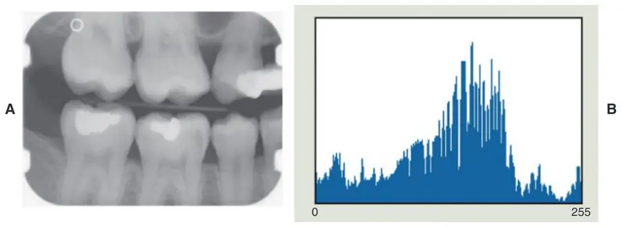
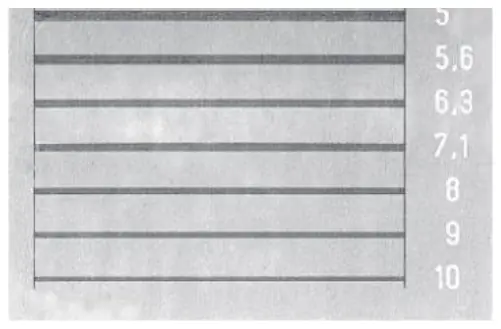

نسخه استخراجشده؛ ترجمه یا تأیید علمی انجام نشده است. وضعیت: captured
تعریف: «تفکیک کنتراست، توانایی تمیز دادن چگالیهای متفاوت در تصویر رادیوگرافی است.»

و تابع برهمکنش چهار عامل است — این زنجیرهی چهارحلقهای را حفظ کن:
و نکتهی مهم این فهرست: دو حلقهی نخست به دستگاه مربوطاند و دو حلقهی آخر به نمایش و انسان. زنجیره به اندازهی ضعیفترین حلقهاش قوی است.
«آشکارسازهای دیجیتال کنونی داده را با ۸، ۱۰، ۱۲ یا ۱۶ بیت میگیرند. عمق بیت توانی از ۲ است.» و معنایش: «آشکارساز میتواند از نظر نظری ۲۵۶ (۲ به توان ۸) تا ۶۵٬۵۳۶ (۲ به توان ۱۶) سطح تضعیف متفاوت بگیرد.»
ولی نظری با عملی فرق دارد: «در عمل، شمار واقعی سطوح تضعیف معنادار قابل دریافت، با نادقتیهای دریافت تصویر — یعنی نویز — محدود میشود.»
پس زنجیرهی کامل را ببین: آشکارساز شاید ۶۵٬۵۳۶ سطح بگیرد، نمایشگر ۲۴۲ تا نشان دهد، چشم ۶۰ تا را در بهترین حالت ببیند، و در مطب واقعی کمتر از ۳۰ تا. عمق بیت بالاتر، فراتر از حدی، سودی به تشخیص نمیرساند.
و یک مقایسه با فیلم: «محدودیتهای بینایی انسان در مشاهدهی فیلم هم وجود دارند؛ ولی درخشندگی (روشنایی) یک ویوباکس رادیوگرافی معمول بسیار بیشتر از یک نمایشگر رایانهی معمول است. بنابراین، نور محیط اتاقی که تصویر در آن دیده میشود از نظر نظری اثر کمتری بر فیلم دارد تا بر نمایشگرهای دیجیتال.»
تعریف: «تفکیک فضایی، ظرفیت تمیز دادن جزئیات ریز در یک تصویر است. تفکیک اغلب با واحد جفتخط بر میلیمتر سنجیده و گزارش میشود.»

و جفتخط چیست؟ «اجسام آزمون شامل مجموعههایی از خطوط رادیواوپاک بسیار ریز که با فاصلههایی برابر پهنای یک خط از هم جدا شدهاند... یک خط و فاصلهی همراهش، یک جفتخط نامیده میشود.»
و قاعدهی بنیادی دیجیتال: «دستکم دو ستون پیکسل برای تفکیک یک جفتخط لازم است: یکی برای خط روشن و یکی برای فاصلهی تیره.»
قاعده: «در سامانههای تصویربرداری دیجیتال حالت جامد، حد نظری تفکیک با اندازهی پیکسل تعیین میشود: هرچه اندازهی پیکسل کوچکتر، تفکیک بیشینهی قابل دستیابی بالاتر.»
و یک مثال کامل: «سنسوری با پیکسلهای ۲۰ میکرومتری میتواند تفکیک نظری بیشینهی ۲۵ جفتخط بر میلیمتر به دست آورد: یک جفتخط دو پیکسل میخواهد، در این مورد ۲ ضربدر ۲۰ که برابر ۴۰ میکرومتر است. پس تفکیک بیشینه ۱ جفتخط بر ۴۰ میکرومتر، برابر با ۲۵ جفتخط بر میلیمتر خواهد بود.»
و همان را به نقطه بر اینچ: «اگر اندازهی پیکسل ۲۰ میکرومتر باشد، یک نقطه بر ۲۰ میکرومتر داریم. این برابر ۱۲۷۰ نقطه بر اینچ است، چون ۲۵٬۴۰۰ میکرومتر در یک اینچ هست (۲۵۴۰۰ تقسیم بر ۲۰ میشود ۱۲۷۰).» و یک نمونهی دیگر: پیکسل ۵۰ میکرومتری ← ۱۰ جفتخط بر میلیمتر ← ۵۰۸ نقطه بر اینچ.
«در عمل، تفکیک واقعی آشکارساز از این حدود نظری کمتر است، به چند دلیل، از جمله:»
و عدد بهترین دستگاه موجود: «در حال حاضر، پرتفکیکترین آشکارساز حالت جامد داخلدهانی برای دندانپزشکی تفکیک اندازهگیریشدهای حدود ۲۰ جفتخط بر میلیمتر دارد؛ هرچند این به معنای دستیابی به این سطح از تفکیک در کار بالینی نیست.»
و چرا؟ «تفکیک فضایی بالینی نهتنها به ویژگیهای آشکارساز، بلکه به اندازهی نقطهی کانونی، فاصلهی منبع تا جسم، و فاصلهی جسم تا تصویر هم بستگی دارد.»
و اینجا یک مبادلهی کلاسیک هست: «تفکیک در سامانههای PSP با ضخامت مادهی فسفر تحت تأثیر است. لایههای فسفر ضخیمتر پخش بیشتری میسازند و تفکیک پایینتری میدهند. ولی لایهی ضخیمتر کارایی جذب پرتو ایکس را بهبود میدهد و به گیرندهی سریعتری میانجامد.»
و دو عامل دیگر: «تفکیک همچنین معکوساً متناسب با قطر باریکهی لیزر است. قطر مؤثر باریکه با لرزش در طرحهای اسکنر آینهی چرخان و درام افزایش مییابد. حرکت اسکن کند هم با اندازهی گام پیشروی صفحه بر تفکیک اثر میگذارد، و این گام در برخی سامانهها قابل تنظیم است.»
و ظاهر پیکسلی: «نمایش نرمافزاری همهی تصاویر دیجیتال، بزرگنمایی تصاویر را ممکن میکند. تصویر پریاپیکالی که کل نمایشگر را پر کند ممکن است ۱۰ برابر یا بیشتر بزرگنمایی شود. در این سطح، تصویر الگویی بلوکی یا ظاهری پیکسلی پیدا میکند و حدود تفکیک سامانه آشکار میشود.»
تعریف: «توانایی یک گیرنده در گرفتن دامنهای از پرتوگیریهای پرتو ایکس، عرضدید نامیده میشود.» و کیفیت مطلوب: «توانایی ثبت دامنهی وسیعی از تفاوتهای تضعیف بافتی — از لثه تا مینا — و در همان حال، تفاوتهای ظریف تضعیف درون این بافتها باید از نظر بصری آشکار باشند.»
و اعداد فیلم: «دامنهی مفید چگالیها در رادیوگرافی فیلمی دو مرتبهی بزرگی، از ۰٫۵ تا ۲٫۵ است. دامنهی دینامیک فیلم در واقع بیش از چهار مرتبهی بزرگی گسترده است، ولی چگالیهای ۳ و ۴ که تنها یکهزارم تا یکدههزارم نور فرودی را عبور میدهند، روشنایی تشدیدشده یا «نور داغ» میخواهند تا از چگالی ۲٫۵ تمیز داده شوند» — و «چنین دستگاههایی در کار عمومی رایج نیستند».
و رتبهبندی عرضدید: «عرضدید آشکارسازهای CCD و CMOS مشابه فیلم است و میتوان آن را با تقویت دیجیتال کنتراست و روشنایی گسترش داد. گیرندههای PSP از عرضدیدهای بزرگتری برخوردارند و پاسخی خطی به پنج مرتبهی بزرگی پرتوگیری پرتو ایکس دارند.» و به بیان دیگر: «صفحات PSP از این نظر یگانهاند که بهشکل خطی به پرتوگیری پاسخ میدهند.»
نوع سؤال: ساخت کلمه · 4 خانه
حروف منبع: ز · ن · ی · و
نوع سؤال: ساخت کلمه · 5 خانه
حروف منبع: ک · ی · س · پ · ل